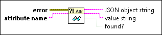

Read Error Cluster Attribute VI
Owning Palette: Multiple Errors VIs
Requires: Base Development System
Returns the value of an attribute stored in an error cluster. If the attribute is not found, this VI returns an empty string.

 Add to the block diagram Add to the block diagram |
 Find on the palette Find on the palette |